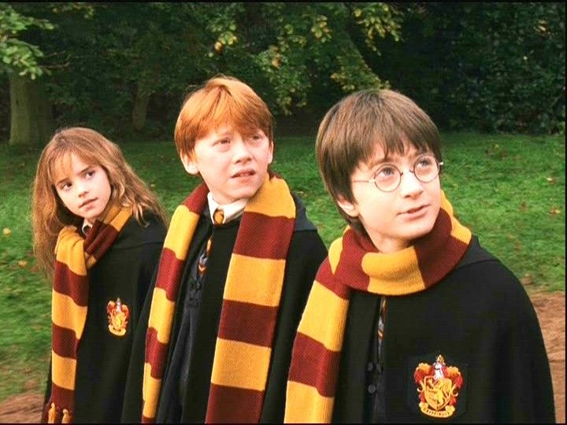

Conocé más datos interesantes
Este video muestra más sobre el detrás de escena del mundo mágico que tanto nos encanta.
Menú

El universo de Harry Potter está lleno de detalles y datos interesantes que muchos fans descubren con el tiempo. Tanto en los libros como en las películas, hay curiosidades que hacen que la experiencia sea aún más rica.
Harry Potter no solo fue un éxito en ventas y en el cine, sino que también generó una comunidad de fans en todo el mundo. Eventos, parques temáticos y contenido derivado mantienen vivo el interés por la saga.
Incluso hoy, nuevas generaciones siguen descubriendo esta historia, lo que demuestra el impacto que tuvo y sigue teniendo en la cultura popular.
Este video muestra más sobre el detrás de escena del mundo mágico que tanto nos encanta.